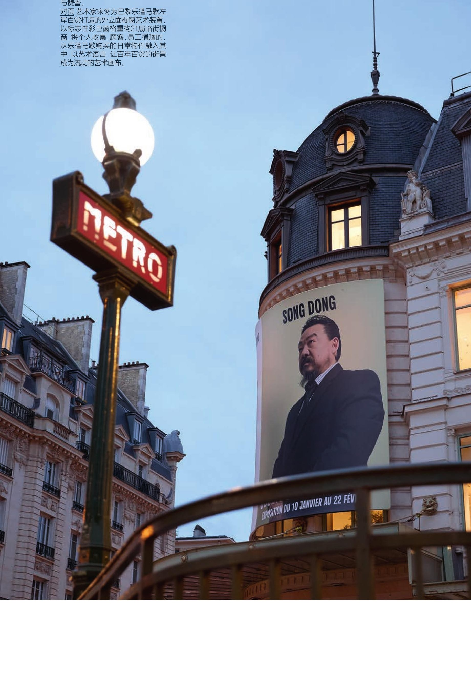
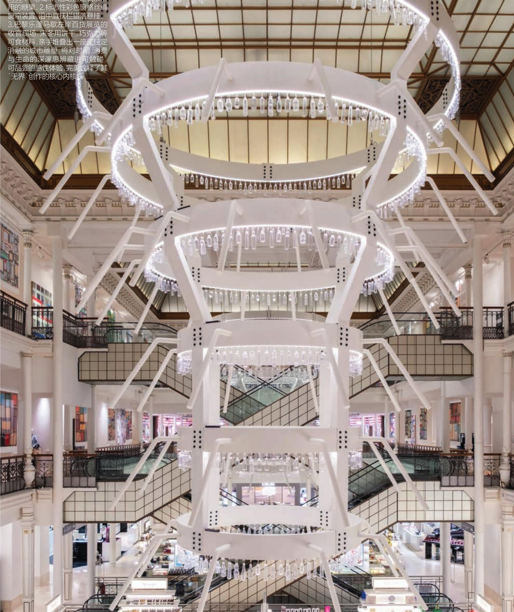

引言 Introduction
À l'occasion de son soixantième anniversaire, Song Dong a entamé en juillet 2025 un projet intitulé Les Dix-Huit Métamorphoses (18变), dans lequel il réinvente chaque mois son image en fonction de sa situation du moment et des projets artistiques qu'il mène. Au Bon Marché à Paris, en janvier, il apparaît sous les traits de Marcel Duchamp : la septième transformation de cette série.
为庆祝60岁生日，自2025年7月以来，宋冬开始了一件名为《18变》的作品：每月根据当下处境和艺术项目制定自我形象。在一月的巴黎乐蓬马歇，他化身为马塞尔·杜尚——这是《18变》中的第7变。
Cette métamorphose renvoie à une question formulée il y a plus d'un siècle. Lorsque Duchamp expose un simple porte-bouteilles acheté dans un grand magasin comme œuvre d'art, il ouvre la voie à une logique entièrement nouvelle : celle du ready-made. L'enjeu n'est alors plus de savoir si l'artiste a fabriqué l'objet de ses propres mains, mais de reconnaître le déplacement conceptuel qu'il opère. Face à nous, s'agit-il d'un objet, ou d'une manière de penser l'objet ?
而这一"变"，指向的是一百多年前被提出的一个问题。那时，杜尚将一个从百货商场购得的瓶架直接呈现为艺术品，使一种全新的艺术逻辑（现成品艺术）成为可能。真正重要的，不再是艺术家是否亲手制作了作品，而是他关于这一物体提出了一种新的观念：我们面对的，究竟是一个物，还是一种被思考的方式？
Song Dong étend aujourd'hui cette interrogation à l'échelle du grand magasin lui-même. Si un porte-bouteilles peut devenir œuvre d'art par un changement de regard et de définition, pourquoi un espace soigneusement scénographié, continuellement réorganisé et réinventé, ne pourrait-il pas être envisagé, lui aussi, comme une œuvre ?
宋冬把这个问题，扩展到整个商场：如果一个瓶架可以因为被重新定义而成为艺术，那么一个本就被精心布置、不断被重新组织的空间，为什么不能同样被看作一件作品？
一、变身杜尚，重回百货商场
Pour Song Dong, les inventeurs du grand magasin, « ce sont exactement comme des artistes ». Au milieu du XIXe siècle, Aristide Boucicaut et son épouse font preuve d'une créativité exceptionnelle. Non seulement ils « inventent » un modèle commercial fondé sur l'abondance du choix, mais ils ne cessent d'introduire de nouvelles pratiques : prix fixes, possibilité d'échange ou de remboursement, opérations promotionnelles. Ils vont même jusqu'à transformer les marchandises blanches invendues en un événement visuel spectaculaire : le Mois du Blanc. Il ne s'agit pas seulement de vendre des produits, mais de concevoir le désir, d'organiser l'expérience et de mettre en scène le regard. En ce sens, Le Bon Marché est lui-même une œuvre ready-made.
在宋冬看来，第一个创建百货商场的人，"就跟艺术家是一样的"，19世纪中叶，阿里斯蒂德·布西科和他的妻子极具创造性思维，他们不仅"创作"了一种集中提供海量选择的商业模式——百货商场，还不断进行新的发明，固定价格、退换制度、促销活动，甚至把滞销的白色商品，变成一场名为"白色月"的视觉盛宴。他们并不只是经营商品，而是在设计欲望、组织体验、创造观看。乐蓬马歇本身，就是一件readymade艺术品。
Mais l'apport de Duchamp à la réflexion de Song Dong ne se limite pas à la question « qu'est-ce que l'art ? ». Il renvoie à une pensée de l'indistinction : les frontières que nous traçons entre les choses n'existent pas d'emblée. Elles sont des constructions ; elles ne relèvent pas de l'essence des choses.
« Quand vous vous regardez dans un miroir, que voyez-vous ? », me demanda Song Dong.
« Mon reflet », lui répondis-je.
« Vous êtes-vous déjà demandé comment le miroir vous regarde ? »
但杜尚对宋冬的启发，不只是"什么是艺术"的单向问题，而是"无界"：事物之间的界限是被建构的，但不是本质的。宋冬老师问我："比如说咱们平时看镜子的时候，你看到的是什么呢?"我说，"看到的是我的像。"他说："你想过镜子怎么看你吗？"
Ce renversement de la question déplace instantanément le sujet du regard. Le miroir n'apparaît plus comme un simple objet, mais comme un interlocuteur placé sur un pied d'égalité avec celui qui le contemple. Song Dong désigne cette configuration par le terme de « hùjìng guānxi » (互镜关系), que l'on pourrait traduire par « une relation de miroir réciproque ». Art et non-art, sujet et objet, regarder et être regardé : toutes ces distinctions que nous tenons pour acquises procèdent en réalité de catégories que nous avons pris l'habitude d'établir. Lorsque ces frontières cessent d'apparaître comme des évidences, l'expérience elle-même s'ouvre. C'est là, peut-être, le véritable enjeu du retour du porte-bouteilles duchampien dans l'espace du grand magasin imaginé par Song Dong.
观看的主体在反问的一瞬间发生了变化，原来，镜子不是物件，而是平等地、与我对话的主体。宋冬把这种视角叫做"互镜关系"。艺术与非艺术、主体与客体、观看与被观看，这些看似稳定的界限，其实都来自我们的习惯性划分。而当界限开始松动，经验也随之被打开。这才是宋冬把杜尚的"瓶架"带回百货商场的真正用意。

Cette perte d'évidence des frontières traverse l'ensemble de l'exposition. Le porte-bouteilles de Duchamp, désormais consacré par l'histoire de l'art, se renverse à nouveau pour redevenir un objet du quotidien : un lustre. Les deux lustres se répondent parfaitement ; les rideaux, disposés par paires sur les quatre côtés, réactivent cette relation de miroir réciproque. Dans les vingt-et-une vitrines du Bon Marché, les nouveautés cèdent la place à des objets anciens : appareils photographiques, théières, horloges. Les objets, leur image dans le miroir, les visiteurs et la rue se réfléchissent mutuellement, réveillant le souvenir de leur ancienne condition de marchandises. Au cœur de l'installation principale, une pièce constellée de lampes dialogue avec les miroirs placés au sol. Comme eux, ce sont des objets qui sculptent le regard. Dans le kaléidoscope monumental, le visiteur découvre une multiplicité de ses propres images. Une médiatrice du Bon Marché me confie qu'il s'agit de la première œuvre d'une exposition collaborative invitant explicitement le public à marcher dessus. Pour Song Dong, l'expérience repose précisément sur ce geste. D'un côté, le miroir posé à même le sol remet en cause la fonction qui lui est habituellement assignée. De l'autre, son usure progressive rappelle celle de la marchandise consommée par ses utilisateurs. Usage et altération se produisent simultanément. L'usure ne se manifeste pas d'un seul coup ; elle s'accumule discrètement avec le temps.
这种界限的松动，贯穿着整个展览。已经成为艺术史的瓶架，再次倒转为吊灯，灯或者瓶架都不占据固定定义的视角，而是始终流动；吊灯两盏完全对应，四侧窗帘成对出现，再次形成互镜关系；21个商场橱窗不再展示新品，而是陈列旧物，旧相机、茶壶、钟表和镜中的自己、街道互相镜映，唤醒物品曾为商品的记忆；走入主装置，一个挂满灯的房间，和脚下的镜子一样，它们是雕刻视线的物品；放大版的万花筒中是各种角度的自己，工作人员说，这是乐蓬马歇合作展品中第一次欢迎人们去踩的作品，因为宋冬认为，这件作品的关键正在于"踩"镜子的参与。一方面，镜子放在脚下质疑了它的惯常功能，另一方面，镜子被磨损正如商品被顾客消费：使用与损耗同时发生，磨损并不轰然显现，但日积月累。
Partout, les miroirs invitent le visiteur à déplacer son point de vue. Comme s'ils murmuraient : « Ne me regarde pas. C'est toi. » L'œuvre ne se trouve pas dans l'objet lui-même, mais dans cet instant où le regard quitte sa position habituelle pour en adopter une autre.
无穷的镜子时时提醒观众转换视角：嘿，别看向我，是你，艺术发生在你转换日常观看位置的那一刻。
Une fois l'événement Eating the city terminé, fait quelque peu inattendu, les visages les plus heureux étaient ceux des manutentionnaires chargés de la logistique, plus heureux encore que les enfants. Ils me racontèrent qu'habituellement, leur travail se limitait au transport et au montage des expositions. Cette fois-ci, pourtant, tout était différent. Tout au long de la journée, ils recevaient de petites demandes : « Il n'y a plus assez de gaufres », « Il faudrait encore 10 boîtes de biscuits au chocolat ». Ils partaient chercher les produits demandés, les acheminaient à l'étage, puis voyaient presque aussitôt ces biscuits se transformer en quai de gare. D'autres requêtes arrivaient sans cesse depuis le deuxième étage. Sous leurs yeux, les « briques » qu'ils avaient eux-mêmes transportées devenaient peu à peu une ville comestible d'une étonnante beauté. Au-dessus d'eux, le soleil parisien traversait la verrière et inondait l'espace de lumière. Or, jusque-là, l'essentiel de leur travail se déroulait dans les réserves du sous-sol. Une semaine plus tard, lorsque la ville fut achevée puis dévorée, ils me confièrent que ces quelques jours avaient été les plus heureux depuis qu'ils travaillaient.
"吃城市"活动结束后，令人意外的是，最灿烂的笑容来自负责后勤的搬运工——居然比小孩子们还更开心！他们告诉我：过去，他们只负责布展阶段的搬运、组装，可这次不同，他们会每天不同时刻收到"华夫饼不够了"、"巧克力夹心饼干可能再来十盒"的小任务。他们兴高采烈地找到特定的饼干，运到楼上看到它们转眼变成了火车站的月台，二楼的要求鱼贯而来，他们便亲眼看着自己亲手传递的"砖头"，成为一座美轮美奂的美味城市，巴黎的阳光晴好，碧蓝色的天空从透明穹顶透出它的光芒——在此之前，他们的绝大部分工作都只在地下一层的库存区。一周后，吃城市竣工，他们说，这是他们工作以来，最快乐的几天。
C'est peut-être précisément à cet instant que la frontière entre l'art et la vie devient indiscernable. Le Bon Marché cesse d'être simplement le lieu de l'œuvre pour devenir l'œuvre elle-même. Le projet convoque la mémoire de son histoire, réveille celle des anciennes marchandises et s'inscrit jusque dans le rythme quotidien de celles et ceux qui le font exister. À cet instant, que sont-ils exactement : manutentionnaires, bâtisseurs ou artistes ? Leur vie, dans toute sa réalité concrète, semble traversée par cette joie singulière qui naît lorsque les frontières perdent leur évidence.
或许，也是在这个时刻，艺术与生活的关系完全模糊，乐蓬马歇在真正意义上完全成为了艺术作品，它追缅了创业史，唤醒了旧商品，甚至进入了一个生命的朝夕，这些人此时是搬运工、建筑工人、还是艺术家？他们活生生的生活被艺术浸透了一种模糊边界的快乐。
Song Dong aime répéter : « Je ne suis rien. Je n'ai rien. Je ne veux rien. » Peut-être est-ce au moment où le moi s'efface que nous acquérons les yeux de l'univers.
宋冬经常说："我什么都不是，我什么都没有，什么都不要。"或许，在自我消失的那一刻，我们将拥有宇宙的眼睛。
二、会被吃掉的城市

Pour parler de Eating the city, Song Dong revient souvent sur cette idée : « Nous construisons les villes avec nos désirs, et nous les détruisons avec ces mêmes désirs. » Pourtant, à observer son processus de construction, on serait tenté de raconter cette phrase dans l'autre sens.
在谈到"吃城市"时，宋冬常常说："我们用欲望建造着城市，我们又用欲望摧毁着城市。"但这部作品的搭建过程，似乎要把这句话反着说。
Construire Eating the city est plus complexe qu'assembler des briques de construction. D'abord, il y a le geste. Pour des raisons d'hygiène, les participants doivent porter des gants en plastique, ce qui réduit considérablement la précision des mouvements. Dès qu'il faut construire en hauteur, chaque biscuit doit être déposé avec une extrême délicatesse afin de ne pas écraser les couches inférieures. Tout le travail s'effectue dans une tension permanente, comme la main hésitante d'un débutant traçant ses premiers caractères de calligraphie. Vient ensuite la matière. Les briques sont conçues pour être assemblées et démontées ; les gaufres, elles, ne sont pas des matériaux idéaux. Leur surface irrégulière les bloque parfois dans un angle inattendu et exige de constants ajustements. Les biscuits salés sont si fragiles qu'ils se brisent au moindre excès de force. Le chocolat permet de différencier les couleurs, mais ne peut être manipulé trop longtemps sous peine de fondre et de se déformer sous l'effet de la chaleur des mains. Il faut parfois même découper certains éléments, chaque coupe comportant le risque d'une fracture. À cela s'ajoute la question de la composition. Lorsqu'on installe un bâtiment central, un simple mouvement de manche peut suffire à déplacer ou déséquilibrer les « remparts » construits autour. Mais la difficulté la plus grande est peut-être d'ordre mental. Le temps de construction ne se compte qu'en quelques jours ; tout doit prendre forme rapidement. L'urgence est constante, et pourtant chaque geste exige une attention infinie. Il faut avancer vite tout en demeurant d'une extrême prudence. Aucun retour en arrière n'est possible.
搭建吃城市比搭积木复杂得多。首先是用力：按照卫生标准必须戴塑胶手套，手的灵活程度便降低一大截；而往高处搭建时，每块饼干都要轻拿轻放，避免压碎底层，全程手像写初学书法一样战战兢兢。第二是材质：积木为建与拆而设计，但华夫饼却粗糙不平，并不是理想的砖头，会卡在某个角度，需要精细调整才能对齐；葱香饼干过于酥脆，稍一用力就会碎；巧克力可以区分色彩，却不能拿太久，否则会被手温融化变形；有时还需要切割饼干，而每一次切割都有碎裂的风险。第三是布局：摆放中心建筑时，一不小心，袖口就会碰歪外围的"城墙"。而最难的是心态：搭建时间只有几天，需要快速成型，任务火烧眉睫，可每一步又都要无限的小心翼翼，必须一蹴而就，没有重来的机会。
En tant que point culminant de l'exposition, Eating the city fonctionne aussi comme un miroir du grand magasin. Les marchandises y entrent et en sortent sans cesse. Comme le mandala, il s'agit d'une œuvre dont on sait d'avance qu'elle disparaîtra, mais dont la construction se répète inlassablement. Quant aux consommateurs, ils consacrent du temps à choisir des vêtements ou des meubles censés leur ressembler, avant que ceux-ci ne deviennent à leur tour des choses passagères.
"吃城市"作为整场展览的收官之作，也是关于商场的镜像：商场不断进货、出货，就像曼陀罗，明知每次完成之后都会被清除，却依然不断重复一件必然消失的事务；商场中的消费者，仔细挑选代表自己的服装、家具，终归也是过眼云烟。
C'est précisément ici qu'apparaît une question : si tout est destiné à disparaître, pourquoi continuer avec autant d'ardeur ?
但也是在这里，问题出现了：既然明知一切不过是昙花一现，为何仍然孜孜不倦？
Song Dong commente Eating the city : « Nous construisons les villes avec nos désirs, et nous les détruisons avec nos désirs. (…) En cherchant sans cesse à améliorer notre vie, nous ne cessons d'accumuler, jusqu'à découvrir parfois que la vie en devient moins bonne. » Pourtant, ce que révèle le processus de construction, c'est avant tout le don. Il rappelle une autre réflexion de Song Dong à propos du mandala : « Ce qui m'a d'abord touché, ce n'était pas l'image elle-même, mais la manière infiniment sincère et appliquée dont il était réalisé, grain après grain. Puis venait ce mandala parfait. Une fois le rituel achevé, un coup de balai, et tout disparaissait. » Tout cela évoque moins l'accumulation que le dévouement. On y consacre son énergie, son attention, son temps qui ne revient jamais. Sans garantie. Sans récompense. Sans chercher plus loin.
宋冬对"吃城市"的注解是："我们用欲望建造城市，我们又用欲望摧毁着城市……在努力让生活越来越好的过程中不断攫取，却可能发现生活反而变得更差。"可是，搭建过程所呈现的状态，不太是攫取，更多是付出，是会让我们想起他的另一句话："坛城最开始真正触动我的，不是它描绘的图像，而是它在用特别特别的虔诚、认真的那种方式，一点一点地做，做完了以后让你看到一个完美的曼陀罗。做完了仪式，拿条子，哇，扫了。"这分明是一种毫无保留的付出。付出心血，付出东流不复回的时间，不问得失，不必多言。
Ainsi, le fait que la ville soit vouée à disparaître n'est pas le point d'arrivée de Eating the city, mais son point de départ. Tout l'enjeu réside dans le fait de savoir qu'elle disparaîtra et de la réaliser malgré tout avec le même soin, la même exigence. Comme les Journaux d'eau que Song Dong continue d'écrire tout en sachant qu'ils s'évaporeront. Comme toutes ces existences qui s'efforcent simplement de bien vivre aujourd'hui. Comme, enfin, le thème de cette édition : « Every Day Is Tomorrow ». Song Dong raconte que cette phrase est née d'une plaisanterie lancée par Victoria Comune, responsable des projets culturels et du patrimoine au Bon Marché, lors de la préparation du projet. Il l'a immédiatement adoptée. À ses yeux, elle exprime une forme d'optimisme actif : nous n'attendons pas l'avenir, nous le forgeons chaque jour.
所以说，"城市必然毁掉"并非"吃城市"的落脚点，而是起点：是深知它必将毁掉，仍然尽善尽美地去实现，一如宋冬明知蒸发仍然书写的"水写日记"，一如每个努力将今天过好的人生，也一如这次的主题"每一天都是明天"。宋冬说，这句话来自乐蓬马歇的Victoria对接时的一句玩笑，他非常喜欢，他说，这是一种乐观的行动主义，我们不是在等待未来，而是在每天铸造未来。
Sur les photographies, la table est couverte d'une multitude de bâtiments miniatures : portes monumentales, gratte-ciel, gares, stades. Plus haut, vêtu de sa veste de chef, Song Dong continue d'empiler les éléments, étage après étage. Sept heures plus tard, la ville aura disparu. Pourtant, il continue.
照片中，桌面上密密麻麻地摆满了微缩建筑，城门、高楼、火车站、体育场。高处，穿着厨师服的宋冬仍在一层一层向上搭建。七小时后，这座城市就会被毁掉，但是，他仍在继续。
En discutant avec lui, on est frappé par une qualité devenue rare : une conviction profonde dans ce que l'art peut être et accomplir. Comme s'il voyait de l'espoir, comme s'il percevait ce que l'art peut signifier pour le monde. Certaines questions, dit-il, il sait qu'il les poursuivra toute sa vie.
和他聊天时，你感觉他散发着一种少见的、强烈的对艺术的确信，他似乎可以看见希望，看见艺术可以对世界意味着什么。他说，有一些问题，他知道他会一生追问下去。
Cette tension traverse également son œuvre. À l'inverse de la dimension spectaculaire et éphémère de la performance, les formes qu'il produit demeurent d'une remarquable retenue. Tout y paraît ordonné, paisible, presque silencieux. Ses caractères calligraphiques, les objets de Waste Not, les biscuits de Eating the city : chaque élément semble trouver sa place avec une précision égale, chaque intervalle est mesuré avec le même soin.
这让人想到宋冬作品中的另一种张力：与瞬时性表演所带来的戏剧性感受相反，作品的形式却总是整整齐齐、和和气气，创造出一种安静、有秩序的氛围，像他的字，像《物尽其用》中每件物品、"吃城市"中的每块饼干的摆放，每个间距都那么一致。
事物可以在意义的转换中获得永恒的生命。
Les œuvres de Song Dong ramènent avec douceur l'art contemporain vers l'une des questions les plus anciennes de l'humanité : les choses peuvent traverser le temps en changeant simplement de sens.
Cette sérénité vient peut-être du fait qu'il a depuis longtemps fait une place à l'éphémère. Elle rejoint la tendresse discrète qu'il perçoit dans le ready-made duchampien : les choses ne cessent pas d'exister ; à travers un déplacement de sens, elles peuvent poursuivre leur vie sous d'autres formes.
这种平静，或许来自他已将"昙花一现"安放在心中。正如他所喜爱的杜尚的readymade隐秘的温情：事物可以在意义的转换中，获得永恒的生命。
Après la disparition de son père, Song Dong voit sa mère prisonnière des souvenirs attachés aux objets du quotidien. Il lui propose alors de réaliser ensemble Waste Not. À mesure que les objets quittent leur statut d'objets-souvenirs pour devenir matière de création, ils ne servent plus seulement à se souvenir, mais à faire naître autre chose. Le deuil lui-même se transforme. Le disparu ne s'efface pas ; il demeure présent autrement, continuant à habiter la vie des vivants. L'amour, lui, ne cesse jamais de circuler.
父亲过世后，宋冬看到母亲睹物思人，无法自拔，提议一起创作《物尽其用》。当遗物转化为创作材料，物的性质由"纪念"转向"再生"，悲痛也在这一过程中被重新安置——逝去之人并未消失，而是以另一种形式继续参与生者的生活，爱，永无止息。
Dans les Métamorphoses, le poète romain Ovide proposait déjà une consolation face à l'inquiétude humaine : rien ne disparaît véritablement ; tout se transforme.
古罗马诗人奥维德曾写下《变形记》，抚慰人类的不安：世间万物无一真正消失，只是永恒变化。
Les œuvres de Song Dong ramènent avec douceur l'art contemporain vers l'une des questions les plus anciennes de l'humanité. Les émotions que suscite Eating the city - la mélancolie devant le temps investi dans sa construction, l'inquiétude face à sa disparition imminente - procèdent peut-être toutes d'un même trouble devant la métamorphose. Or, l'acte même de manger n'accomplit sa raison d'être qu'au moment où il fait disparaître ce qu'il touche. Face à l'impermanence de l'existence, il ne s'agit peut-être pas de résister à la transformation, mais de l'accompagner. Alors l'agitation et l'inquiétude finissent par se dissiper d'elles-mêmes.
宋冬的作品，温柔地让当代艺术回到人类追问千年的母题的怀抱：我们关于"吃城市"的种种悲喜，实质都是附着于变形的悸动：哀悼，搭建它的漫长过去，惊惶，它即将被拆除的须臾未来。可"吃"这一动作，本就是在毁掉的时刻才实现价值。面对人生的无常，与其担忧变形，不如顺势而为，奔波与躁动，反而在内恰中消失。
À la fin de notre entretien, Song Dong me confie : « Je me demande souvent pourquoi des personnes qui ne se connaissent pas, vivant dans des lieux différents, ont toutes fait un jour l'expérience d'empiler des choses. Au fond, il s'agit toujours d'utiliser ce qui nous entoure pour explorer les possibilités de la vie. Tous les jeux viennent de la vie. C'est pourquoi je préfère regarder le monde d'une manière sans frontières, avec le regard d'un débutant. »
采访接近尾声时，宋冬说："我也在想，为什么不同地方、互不相识的人，都会有一种把东西摞起来的经验。其实它都是不断地利用身边的物去认识生活的可能性，因为任何的游戏都来自于生活。所以我更愿意用一种无界的方式，用小白来看世界的方式吧。"
C'est quelqu'un d'étonnamment détendu, toujours prêt à repartir de zéro. J'ai pensé qu'un texte devait, grain après grain, élever une figure devant ses lecteurs. Pourtant, au moment de façonner peu à peu celle de Song Dong, en essayant d'en reproduire les contours, je me suis aperçu d'une chose inattendue : l'homme que je cherchais à mettre debout était déjà assis.
他是那么放松的一个人，总是不断地归零。我曾认为，文章要聚沙成塔，最终在读者面前立起一个人，可现在我要立的这个人，在我一点点照猫画虎捏起来以后，才发现：他是坐着的。
Lorsque Eating the city eut lieu, le mois de février avait déjà commencé. Pour la performance du soir, Song Dong avait revêtu un costume de chef orange spécialement préparé pour l'occasion - la huitième métamorphose de son projet 18 Transformations. Et pourtant, il n'en conserva aucun selfie.
在"吃城市"举行时，时间已经到了二月，宋冬换上了为晚上的"吃城市"特别准备的橙色厨师套装，也是他的"十八变"作品中的"第8变"，一张自拍都没有留下。